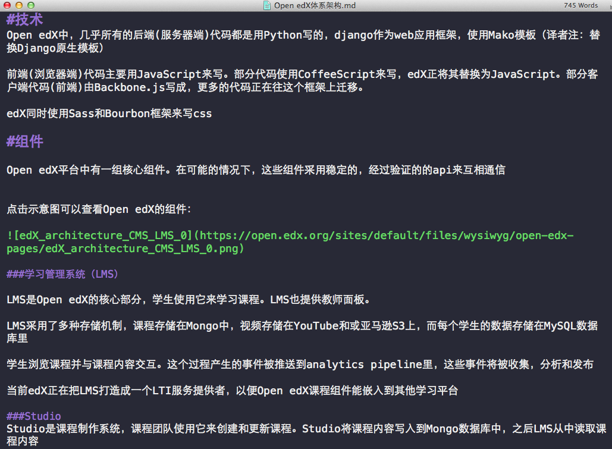
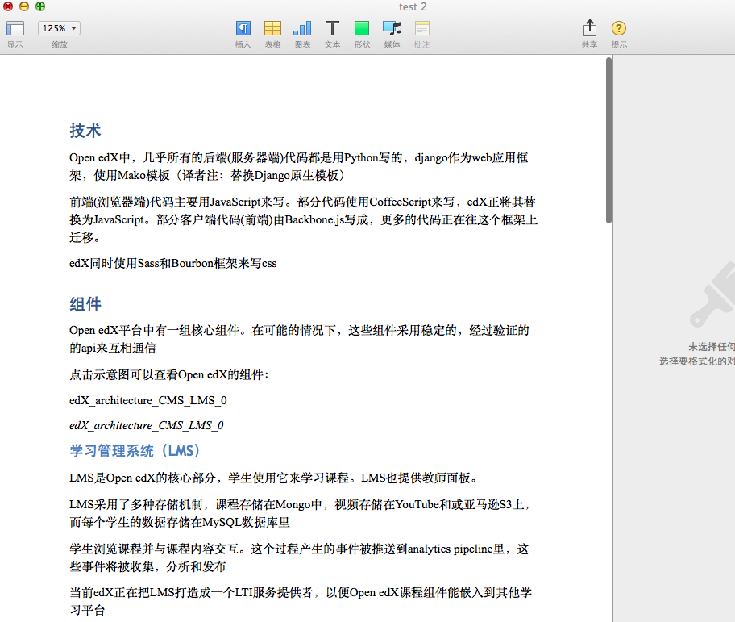

作为一个工具控，喜欢被别人安利有趣的东西，我就很喜欢@XD小伙伴时不时的分享，遇到喜欢的东西也不能藏过夜，想快快安利给大家
pandoc的惊艳是那种 风陵渡口，人间初见误终身。
缘起
最近要给公司提供一堆文档，作为过去技术开发的总结，其实大多都已经整理在我的个人博客中了。可毕竟我不能ctrl-s下来吧，文档要的是干净利落整洁清晰，html参杂了博客的样式，显然不合适，同时公司喜欢归档pdf或是word格式的文件
而我又习惯使用markdown写文档，我想大多程序员也是如此吧，在word里写会做噩梦的
于是我找到Mou(一款优秀的markdown写作工具)的导出功能，导出为PDF，可效果丑的不要不要的
祭出神器Github，分分钟，找到pandoc
一看源码吓的我都坐到地上了，90.5%的代码是Haskell写的，Haskell写的！写的！的！
Pandoc作者是John MacFarlane，一位来自美国加州大学伯克利分校的哲学教授
抛开Haskell的贵族血统不说，稳定和易用程度也是惊人
特性
pandoc能轻易把文件从一种标记语言格式转换到另一种格式，瑞士军刀一般全面而锋利。
允许的input file：
- Markdown
- reStructuredText
- GitHub-Flavored Markdown
- Word docx
- ODT
- HTML
- LaTeX
- EPUB(v2 or v3)
- CommonMark
- PHP Markdown Extra
- Textile
- MediaWiki markup
- TWiki markup
- Haddock markup
- OPML
- Emacs Org mode
- DocBook
- txt2tags
可选的output file
- plain text,
- Markdown
- HTML5
- LaTeX
- Word docx
- OpenDocument
- ODT
- reveal.js或是S5 HTML 幻灯片
- CommonMark
- PHP Markdown Extra
- GitHub-Flavored Markdown
- reStructuredText
- XHTML
- ConTeXt
- RTF
- OPML
- DocBook
- OpenDocument
- ODT
- GNU Texinfo
- MediaWiki markup
- DokuWiki markup
- Haddock markup
- EPUB(v2 or v3)
- FictionBook2
- Textile
- groff man
- Emacs Org mode
- AsciiDoc
- InDesign ICML
- Slidy
- Slideous
- DZSlides]
这篇文章做了更好的分类：
- HTML格式: XHTML, HTML5, 以及HTML幻灯片Slidy， S5，或者DZSlides.
- 文字处理软件格式： Microsoft Word docx, OpenOffice/LibreOffice ODT, OpenDocument XML
- 电子书： EPUB
- 文档格式： DocBook, GNU TexInfo, Groff man pages
- TeX格式： LaTeX, ConTeXt, LaTeX Beamer slides
- PDF via LaTeX
- 轻量级标记语言格式： Markdown, reStructuredText, AsciiDoc, MediaWiki markup, Emacs Org-Mode, Textile
安装（Mac下）
brew install pandoc
使用
pandoc Open edX体系架构.md -o test.docx -c Github.css
你看pandoc很聪明的，它会根据后缀自动判断格式
于是我们看到格式从markdown：

转化到docx，以Github的样式风格

Todo
md2docx.py
写个脚本把当前目录下所有md文件装化为同名docx
md2webppt
也不想写ppt，折腾半天的字号好烦
vim slides.md
% md2webppt
% wwj
% 2015/11/24
# 第一页
- 第一项
- 第二项
# 第一页
- 第三项
- 第四项
# 第一页
- 第五项
- 第六项
- 
pandoc slides.md -o slides.html -t dzslides -s
我们也可以使用流行的reveal.js
pandoc slides.md -o slides.html -t revealjs -s
我们还有一些主题可选：
pandoc slides.md -o slides.html -t revealjs -s -V theme=solarized
- default：（默认）深灰色背景，白色文字
- beige：米色背景，深色文字
- sky：天蓝色背景，白色细文字
- night：黑色背景，白色粗文字
- serif：浅色背景，灰色衬线文字
- simple：白色背景，黑色文字
- solarized：奶油色背景，深青色文字
更完备的案例参考reveal.js-with-pandoc.这也是我自己在用的模板
用markdown写PPT真是爽嗨
more
更多强大的特性，参考jgm/pandoc
附
如果你想convert pdf，请使用pdf2htmlEX
pdf2htmlEX --fit-width 1024 integral.pdf